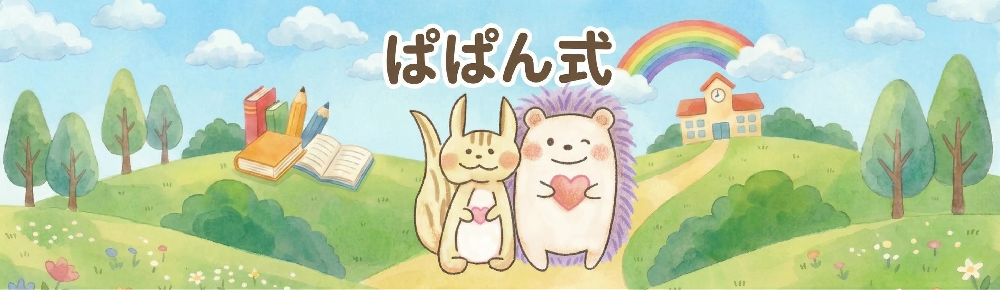
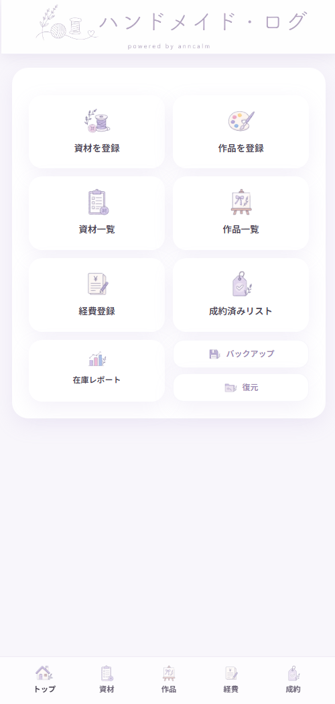

FOR KIDS & FAMILY
ぱぱん式
まなびポータル
遊ぶように学び、学ぶほど世界が広がる。
3歳から12歳ごろまでの子ども向け無料学習サイト。算数・ことば・英語・理科・脳トレ・お金の学びなど、多彩なコンテンツをブラウザだけで楽しめます。
ぱぱん式で学ぶPLAYLEARNGROW
PAPAN-SHIKI WEB SERVICES
毎日の「やってみたい」に、ちょうどいい道具を。
ぱぱん式は、子どもも大人も自分のペースで楽しめるWebサービスをつくっています。

ABOUT US
ぱぱん式は、ブラウザですぐに使える、やさしいWebサービスのシリーズです。
遊びながら学べる子ども向けコンテンツから、自分の「好き」を見つめるツール、ものづくりを支える記録アプリまで。会員登録やダウンロードの手間をできるだけ減らし、思い立ったときに始められる体験を大切にしています。
OUR SERVICES
それぞれの「やってみたい」に寄り添う、3つのサービスがあります。
FOR KIDS & FAMILY
遊ぶように学び、学ぶほど世界が広がる。
3歳から12歳ごろまでの子ども向け無料学習サイト。算数・ことば・英語・理科・脳トレ・お金の学びなど、多彩なコンテンツをブラウザだけで楽しめます。
ぱぱん式で学ぶFOR YOUR FAVORITES
あなたの「好き」を、ひとつの円に。
推しの比率や内訳をドーナツチャートで楽しく可視化。ジャンル別・作品別に編集し、保存した画像をSNSでシェアできます。公開フォーマットから気軽に始めることもできます。
推しポフォをつくるMY FAVORITES
FOR HANDMADE CREATORS
つくる時間を、もっと心地よく。
ハンドメイド作家のための資材・作品・経費管理ツール。材料費の自動計算、在庫レポート、成約後の売上や利益の集計まで、制作活動の記録をスマートフォンでまとめられます。
ハンドメイドログを使う
QUICK GUIDE
START SOMETHING TODAY